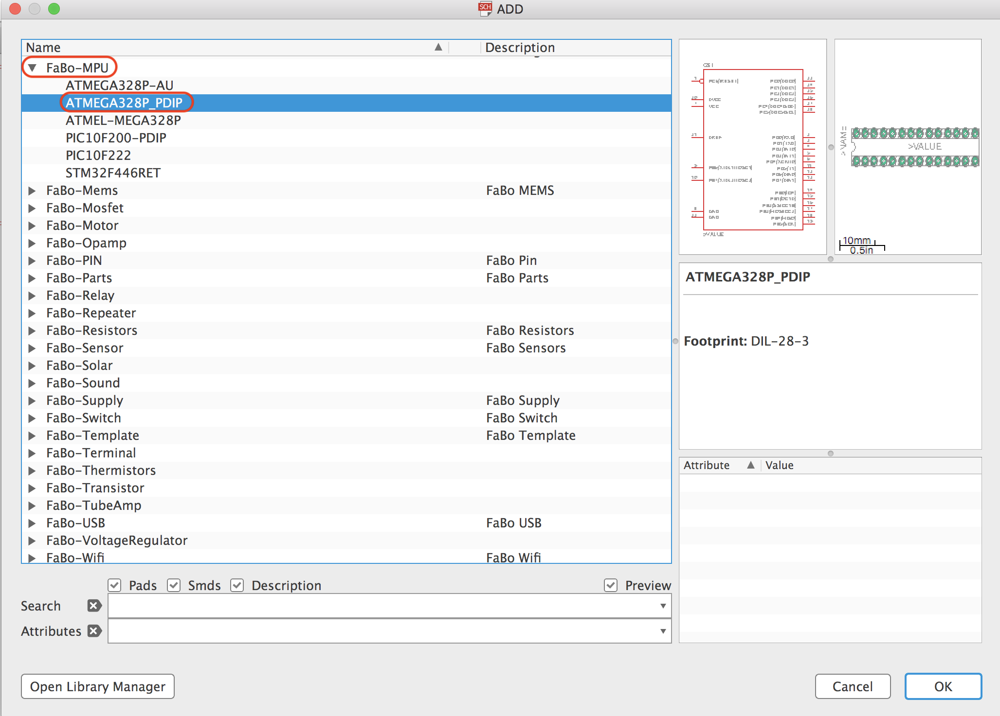
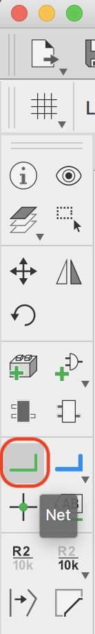
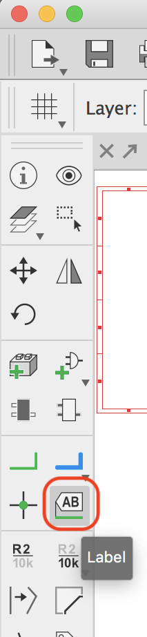
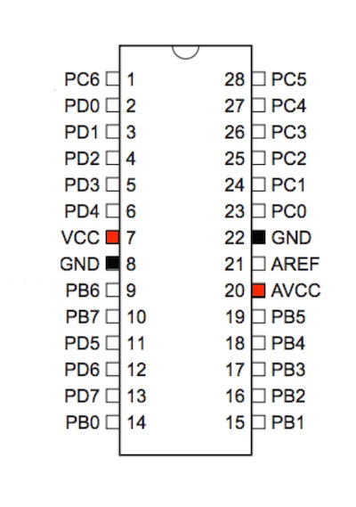

2.6 ICの配置
Arduino Unoで使用されている「ATMEGA328P」を配置します。
配置するパーツ
| 部品名 | 場所 | データシート |
|---|---|---|
| ATMEGA328P | FaBo-MPU+ATMEGA328P_PDIP | データシート |
ATMEGA328の配置
ATMEGA328Pを配置します。
ツールバーよりAdd Partを選択します。
FaBo-MPU+ATMEGA328P_PDIPを選択します。

ATMEGA328Pは空いている箇所に配置します。
Note
余裕を持って配置してください。

線を引き、ラベル名をつける
ツールバーよりNetを選択します。

ICから出ている線、電源関連の線以外の全てに線を追加します。


ツールバーよりLabelを選択します。

１回目のクリックで対象を決め、２回目のクリックで場所が決まります。電源関連以外の部分に追加します。

ラベル名の変更
ツールバーより「Label」を選択します。

先ほど引いた線をクリックし、それぞれの名称を入力します。
GNDと5V電源

+5VとGNDを追加しますが、既に配置している部品については、ツールバーの++Copy++にてコピーすることができます。
使用方法はCopyツール選択後、配置済みの部品をクリックし、次に配置したい場所にクリックすれば完了です。

コピーした部品は下のように配置します。

ツールバーの「Net」を使用し配線します。
+5Vは「AVCC」と「VCC」へ、GNDは左下にあるGND2箇所にそれぞれ配線します。